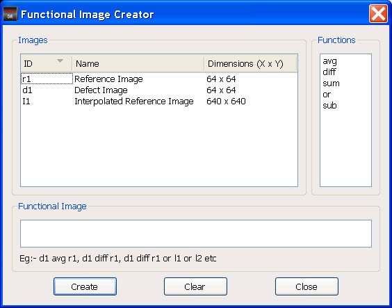

Functional images
can be created and displayed in the IMU window. New functional images
can be created by specifying operations or functions between images.
By default, four functional image icons are
provided in the IMU window toolbar: Absolute Difference, Sum, Average,
and Blinking. You can also create Custom functional images.
Procedure
- In the
IMU window, select Custom from the Functional
Images option in the right-click display unit header
menu.
- In the IMU window, click the
Create Functional Image button (the icon with five arrows).
Figure 1. Create Functional
Image Button
A dialog box appears as shown
in Figure 2. The details of the images displayed
in the IMU window are shown in the Images group box and functions
are listed in Functions group box.
Figure 2. Functional Image Creator
Dialog Box
All images related to a defect
are listed in this window. For each image, an ID is displayed in
the image list. For example, in Figure 2, “r1” refers to “Reference Image” and
“d1” refers to “Defect Image”.
- To create a functional image
between two images in the Functional Image Creator dialog box, type
the functions in the Function Image pane. For example, “d1 avg r1”
creates a functional image that is the average of “Defect Image”
and “Reference Image”.
Alternatively, you can also
create a function as follows:
- In the Functional Image Creator
dialog box, click the ID of the first image.
- Click the function to be applied
between the images.
- Click the ID of the second
image. The function is displayed in the Functional Image pane.
- Click Create to create the image. The
image is created and displayed in the Custom functional area of
the IMU window.
- Click Clear to clear the inputs for creating
the functional image.
Note: The functional image can
only be created between images that have the same number of pixels
in X- and Y-direction as well as the same pixel size. A blinking
functional image cannot be created by the user.